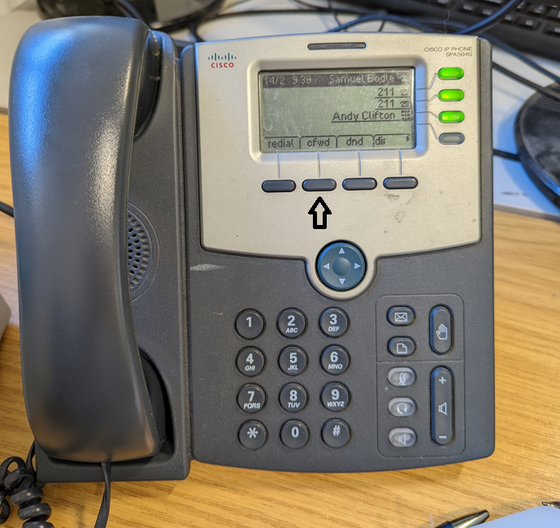

Forwarding calls can be done by us or manually using your desk phone, below will be instructions on how to forward calls.
Forwarding Calls
- Press the 2nd button in on your device (cfwd)
- Type in the phone number or extension number you want calls to be forwarded to - You can find our page on phone extensions here
- Press 'Dial' to confirm the number
- Once you wish to take it off of forwarding press the 2nd button again (-cfwd)
